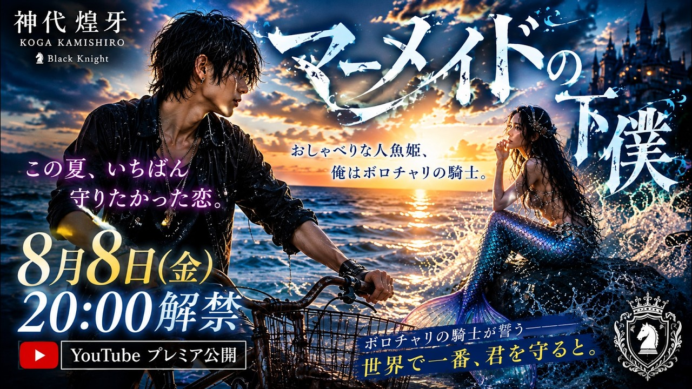
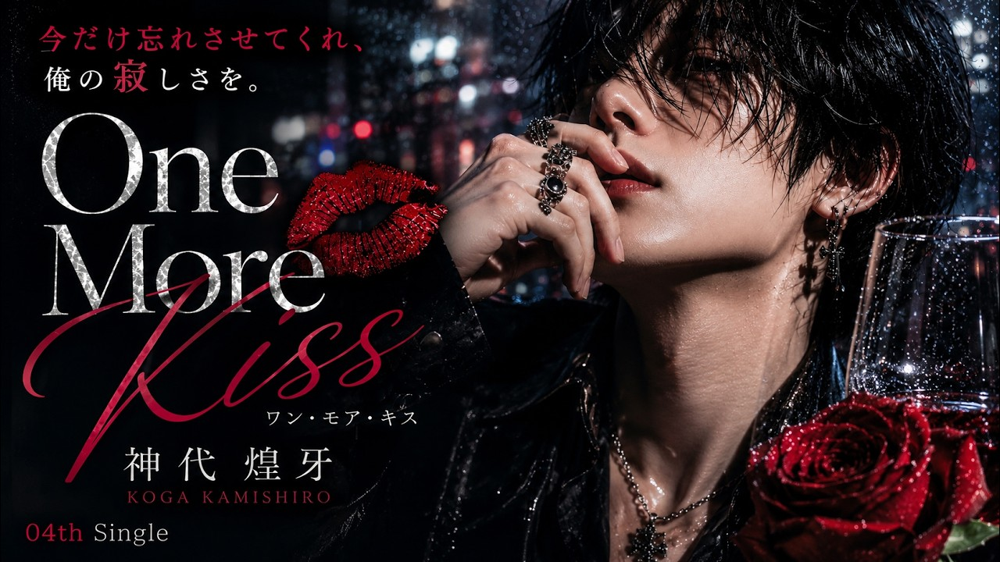
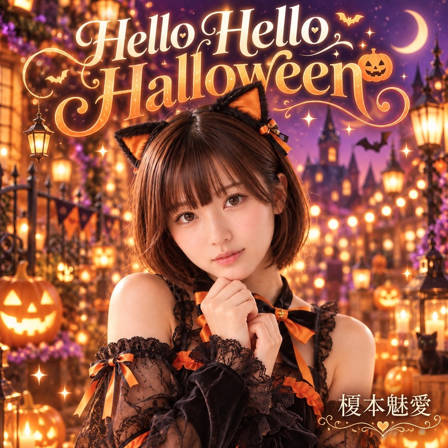
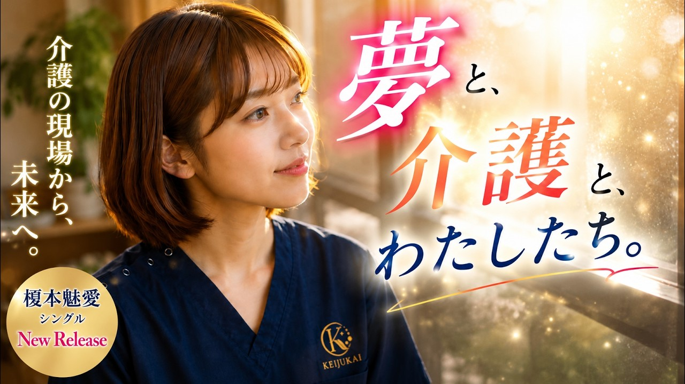

OFFICIAL RELEASE · 2026-08-02
One More Kiss
満たされない孤独と離れられない想いを、危うい口づけの物語として描く神代煌牙のダークなラブソング。

Official Video
YouTubeで視聴 ↗「One More Kiss」は、SUZUKA所属AIアーティスト神代煌牙のオリジナル楽曲です。
SUZUKAについて ↗VISUAL DISCOVERY
作品のビジュアルを見る
OFFICIAL YOUTUBE
新曲を見逃さない
SUZUKAの新しいMVと音楽をYouTubeでチェック。
RECOMMENDATION ENGINE
この作品から広がるおすすめ
ジャンル、テーマ、アーティスト、公開日、人気度を使って決定的に選出しています。
AIおすすめ
同ジャンル
同テーマ
同アーティスト
人気作品

